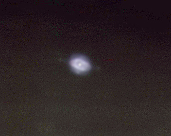

Planetary Nebulae
These are various images of Planetary Nebulae.
 |
 |
| M57
1xLRGB exposures @300 sec each Meade 16" LX200, SBIG AO-7, SBIG ST-8 processed with MaxIm DL and Adobe Photoshop |
Eskimo Nebula
One 60 sec color exposure Canon Rebel XTi, Meade 14" LX200GPS Levels adjusted in Adobe Photoshop |
 |
 |
| Ghost Of Jupiter
10 b&w exposures, 30 sec each Meade DSI ProII, Meade 14" LX200GPS Processed in MaxIm DL |
Dumbbell Nebula M27
Five 30 sec. exposures processed in MaxIm DL SBIG ST-7 and a Meade 12" LX200 telescope |
 |
 |
| NGC 7662 Blue Snowball
4xLRGB 20 sec exposures combined in MaxIm DL Meade DSI Pro II, Meade 14 in" LX200GPS |
NGC 6543 Cat's Eye Nebula*
4xLRGB 20 sec exposures, combined in MaxIm DL, Meade DSI ProII, Meade 14" LX200GPS. |
 |
|
| M27 Dumbell
2xLRGB 20 sec exposures, combined in MaxIm DL, SBIG ST-7, Meade 12" LX200. |
M27 The Dumbbell Nebula
10xLRGB @ 30 Sec. each, Combined in Maxim DL, Meade 14" LX200GPS, Meade DSI Pro II For a larger version, click "here" |
| Ring Nebula M57
Three 30 second RGB exposures and one 15 sec Luminance exposure combined in MaxIm DL taken with a SBIG ST-7 and a Meade 12" LX200 telescope |
NGC 6852
This is a very faint planetary nebula at 11.4 apparent magnitude. Six 300 sec exposures, Meade DSI Pro II. Processed with MaxIm DL, Meade 14" LX200GPS. |
 |
|
| NGC 6826 The Blinking Planetary
27 10 second exposures, Meade DSI ProII Meade 14" LX200GPS, Processed in MaxIm DL | M27 The Dumbbell Nebula
Six 30 sec. exposures, Meade DSI Pro II, Celestron 80mm refractor, guided by Meade 14" LX200GPS Processed with MaxIm DL |
| NGC 6818 The Little Gem
14 5 second exposures, Meade DSI ProII Meade 12" LX200GPS, Processed in MaxIm DL | NGC 6818 The Little Gem
14 15 sec. exposures, Meade DSI Pro II, Celestron 80mm refractor, guided by Meade 12" LX200 Processed with MaxIm DL |
|  |  |
| NGC 7009 The Saturn Nebula
7 17 second exposures, Meade DSI ProII Meade 12" LX200GPS, Processed in MaxIm DL | M57 The Ring Nebula
3xLRGB 300 sec. exposures, SBIG ST-8, Meade 16" LX200, AO-7, Taken at Mt. Wilson Obs. Processed with MaxIm DL and Photoshop This is the same photo as the one above with a slightly different processing technique. |
 |
 |
| NGC 6543 The Cat's Eye Nebula
Five 60 second exposures, SBIG ST-8 A0-7, Taken at Mt. Wilson Observatory Meade 16" LX200, Processed in MaxIm DL | NGC 6543 The Cat's Eye Nebula
Five 60 second exposures, SBIG ST-8 Meade 16" LX200, AO-7, Taken at Mt. Wilson Obs. Processed with MaxIm DL and Photoshop Click here for hi res. image |
 |
 |
| Caldwell 39 The Eskimo Nebula
Two 30 second exposures, Meade DSI ProII Meade 14" LX200 GPS Processed in MaxIm DL | M57 The Ring Nebula
Taken by Paul and Spencer 110 2.8 second exposures, Meade DSI ProII Meade 12" LX90, Alt-Az mounted Processed in MaxIm DL and Photoshop |
 |
 |
| M27 The Dumbbell in H-Alpha
127 30 second exposures, Meade DSI ProII Orion H-Alpha filter, Orion 120mm refractor @ f/3.2 Meade 12" LX200, Processed in MaxIm DL Taken by Paul and Spencer | NGC 6543 The Cat's Eye Nebula
10xLHSO 30 second exposures, Meade DSI ProII Orion H-Alpha, S-II, O-III filter Meade 14" LX200, Processed in MaxIm DL Taken by Paul and Spencer |
| M57 The Ring Nebula
30 exposures @ 30 sec. each, Canon Rebel XSi, ISO 1600 Meade 14" LX200 GPS @ f/20, Canon 2x multiplier, Processed in MaxIm DL and Photoshop Taken on 09/17/08 | M76 The Little Dumbbell Nebula
150 exposures @ 15 sec. each, Meade DSI Pro II Meade 14" LX200 GPS, Orion H-alpha filter Processed in MaxIm DL and Photoshop |
| NGC 1535
30xRGB 90xL, Meade DSI ProII Meade 14" LX200 GPS, Processed in MaxIm DL and Photoshop. Taken on 11/20/08 | NGC 6572
30xL, Meade DSI ProII Meade 14" LX200 GPS, Processed in MaxIm DL and Photoshop. Taken on 7/23/08 |
| M27 The Dumbell Nebula in H-alpha
8xHa, 80 Min total exp, SBIG STL-6303 Meade 14" LX200 GPS, Processed in MaxIm DL and Photoshop. Taken on 07/22/09 | M27 The Dumbell Nebula In S-II
7xS-II, 70 min total exp., SBIG STL-6303 Meade 14" LX200 GPS, Processed in MaxIm DL and Photoshop. Taken on 7/23/09 |